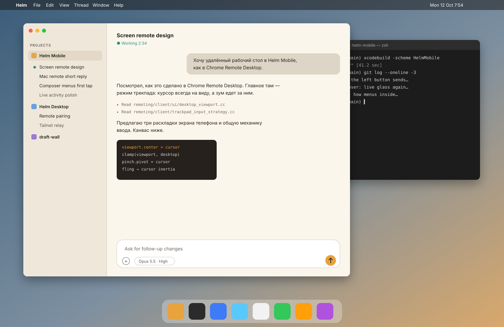

Part of A · screen remoteJ. The screen remote on iPad: the Mac at full width, driven by the trackpadThe experimental screen remote gets the most from an iPad: a big screen, a real pointer, shortcuts passed through to the Mac.

MacBook Pro
Touch
⌘⌥⌃
Done
⌘Shortcuts go to the Mac· hold ⌘⎋ for the iPad
Input
Magic Keyboard trackpad: moves the Mac's pointer one to one (pointer lock + GCMouse deltas). Two-finger click is a right click, two-finger scroll is a scroll, and a click-drag drags.
A finger on the screen: on iPad, touch mode by default (the pointer jumps to the finger), since the screen is big enough to aim at. Trackpad mode stays in the toolbar.
Apple Pencil: a precise click where it touches, and hover moves the pointer.
Keyboard: ⌘C, ⌘Tab, ⌘Space go to the Mac. One combo returns to the iPad. The ⌘⌥⌃ button sends combos without a keyboard.
Picture
The Mac's screen fitted to the window, with black bars where the aspect differs (1.54 vs 1.45).
In a small window (I) the picture shrinks, and a pinch zooms around the pointer.
The toolbar is a glass capsule that hides after 3 s and comes back when the pointer touches the top edge.